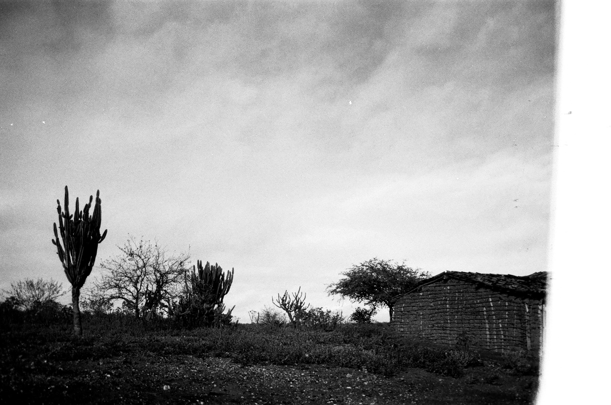
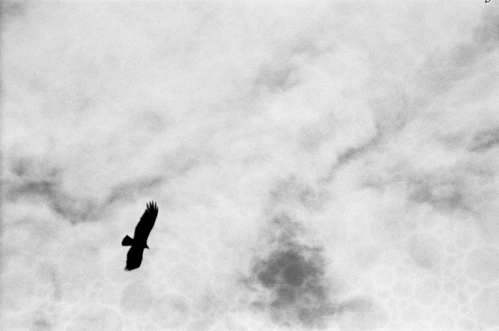
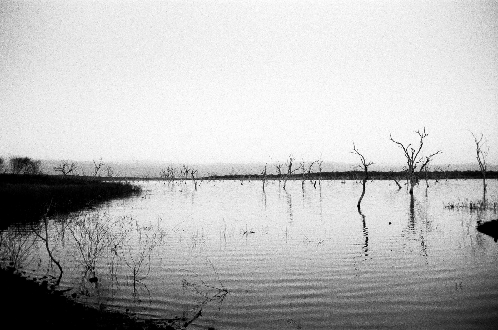
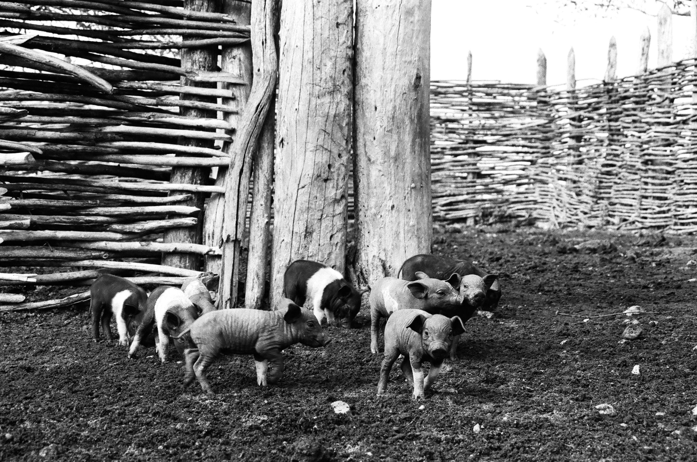
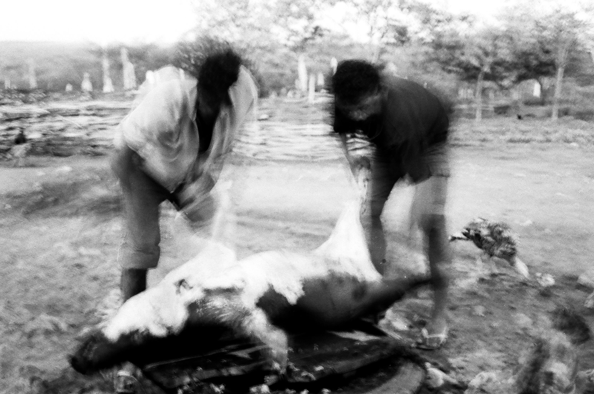
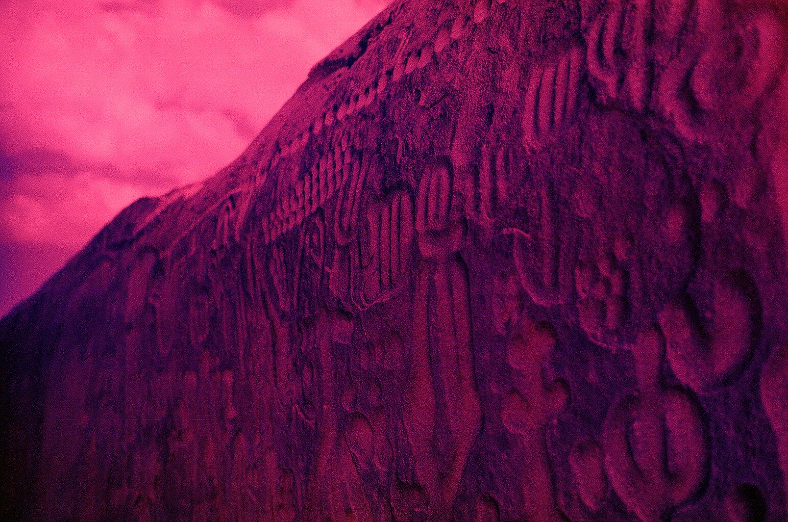

Ir para o sertão era como visitar o quintal de casa, mas desbravando-o de verdade, respirando a terra e o clima que sempre estiveram ali e nunca receberam o devido valor.

Um amigo dizia que o verbo contemplar era um verbo esquecido, de pouca ambição. As cenas da viagem se eternizariam em cores fortes. Anos depois, seriam como vestígios de uma mente jovem e confusa.

Era chegado o momento de encarar aquilo. Sentir o hálito abafado da estrada serviria como embuste à minha tristeza. E antes que eu deixasse o medo tomar conta, me lancei para fora.

Naquele admirável sertão novo, contemplei vida e morte andando de mãos dadas. Simbiose de sangue e suor. De pranto e riso. De homem, animal e terra.

A vida tinha um quê de pertencimento. Era como energia que invade o corpo num gole bem dado de água gelada. Valiosa como nenhum bem material poderia ser.

A morte era respeitada. Temida. Compreendida. Necessária. Impulsionava a sobrevivência. Blasfêmia tomá-la como uma saída fácil. Lição valiosa.

Nos mistérios talhados por Sumé em Ingá, vi a magia impressa em pedra. Era o meu Paebiru. Meu caminho até a Montanha do Sol. Trilha de redenção e aprendizado.

No horizonte, o infinito prometia vários caminhos para os dias que viriam. Na minha história, a vida largaria a mão da morte e seguiria sozinha. Triunfante. Era hora de voltar para casa.